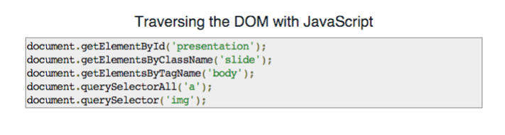

jQuery
What is jquery?
jQuery is a collection of JavaScript code. This is called a library. A library is a collection of reusable methods for a particular purpose.
JQuery is JavaScript.

How to write jquery
jQuery does have its own syntax as well. But it is really easy to use!
To use jQuery (just like Bootstrap in CSS), you have to add the jQuery library to your JSBin OR add the script tag with the jQuery information into your HTML file.
Best practice: Put right before the closing body tag
How to write jquery
jQuery can also be written as a dollar sign $
jQuery selects HTML elements from your HTML to add certain JavaScript methods to them.
$("HTML selector").method();
What is the DOM?

Terminology
- The DOM, just like JavaScript objects, is a data structure called a "tree"
- Each point of data is called a "node"
- Each "node" can have a "parent", "child", and/or "sibling" nodes
- The DOM is accessed by a global variable called document
- We can also use "dot notation" to access methods and properties
Try it!
Try it!
Open your JS console and try these...
document.body
document.body.children
document.querySelectorAll('section')
The Dom and jquery
Using JavaScript to manipulate the DOM.
Comparing to jQuery
HTML
<div id="greeting">Hello!</div>
JavaScript
document.getElementById(‘greeting’)
JQuery
$("#greeting")
HTML
<div class="greeting">Hello!</div>
JavaScript
document.getElementsByClassName(‘greeting’)
JQuery
$(".greeting")
jquery: selecting elements

jquery: the recipe

Where to go?
This website will give you a list of many of the different methods you can use in jQuery, and it had a search function! This documentation is a great way to learn more about what you can do with jQuery.
*Pro tip: Go to the code examples at the bottom of the page.
Starting your jquery
$(document).ready(function() {
//jQuery code
});
This makes the JavaScript ready to run on the page.
How do we find DOM elements with $
$("p") //how to select the elements in the DOM
$(".class") //how to select the elements with a certain class
$("#id") //how to select an element with a certain id
All the (single) methods
- .click()
- .on()
- .change()
- .val()
- .hide()
- .show()
- .fadeIn()
- .append()
- .remove()
HOw do we find DOM elements with $
$("p").text("Hello World!");
$("p").css("color", "red");
$("p").hide();
jquery Events
$("button").click(...do something..);
$("input").change(...do something...);
$("img").on("click", ...do something...);
jquery events
$("button").click(function(){
$("button").css(‘background-color’, ‘blue’)
});
Exercise
Change my Color: https://jsfiddle.net/yonet3d/WrzfR
Change the button background-color to be blue/red when they are clicked. The background color should be grey when the other button is clicked.
How to log the input value
$("input").val();
$("input").change(function(){
var number = $("input").val();
console.log(number);
});
Cute Attack! Exercise
Code Pen Challenge here
Method Chaining
Instead of writing :
$(".warning").hide();
$(".warning").show();
You can write:
$(".warning").hide().show("slow");
As long as you are using the same selector.
May the force be with you! Exercise
Code Pen Challenge here
Create your own
Create your own HTML, CSS, and JS files that have a piece of information that is hidden until a user clicks on it.
Freecodecamp
Complete the first 5 jQuery Exercises for tomorrow.
http://www.freecodecamp.com/challenges/learn-how-script-tags-and-document-ready-work
White Board Game
Problem: You want to create a button in HTML that says “Click me!” and has an ID of “movie”. When the button is clicked, you want the user to be asked for their favorite movie. The user’s answer should be stored in a variable called favFilm. Log the variable favFilm to the console.
Components: On the board, write the code for the HTML and jQuery. Show what should be in the console. Write what the browser should look like.
White Board Game
Problem: You want to have an image in your HTML that pulls a picture of a panda from the internet. The image should have a class of “panda”. When the picture is clicked, you want the user to be asked if they like pandas. If the user says yes, the user should get an alert that says “Me too!” and logs a smiley face in the console. If the user says no, the image of the panda should be hidden, and a sad face should be logged in the console.
Components: On the board, write the code for the HTML and jQuery.
jQuery Plugins
"If you want to create an animation, effect, or UI component, chances are pretty good that someone has done the work for you already."
plugins.jquery.com
jQuery Plugin Usage
- Download the plugin and associated files from the site or github repo.
- Copy them into your project folder.
- In the HTML, reference any associated CSS files.
<link rel="type/stylesheet" type="text/css" href="tablesorter.css">
<script src="lib/tablesorter.js"><script>
$('table').tableSorter();
In-class Assignment
Append Method
The .append(); method in jQuery allows you to add HTML into your browser. The selector expression preceding the method is the container into which the content is inserted.
$("p").append("Greetings! How are you?
");
This will add the paragraph with the text “Greetings! How are you?” to the paragraph that was selected in your HTML.
In-class Assignment
The onclick Function
If you want a function to run when a button is clicked, you can use the following syntax in your HTML.
<button onclick="myFunction()">Click me</button>
In-Class Assignment
Helpful Resources
THE END
Thank you for your attention!